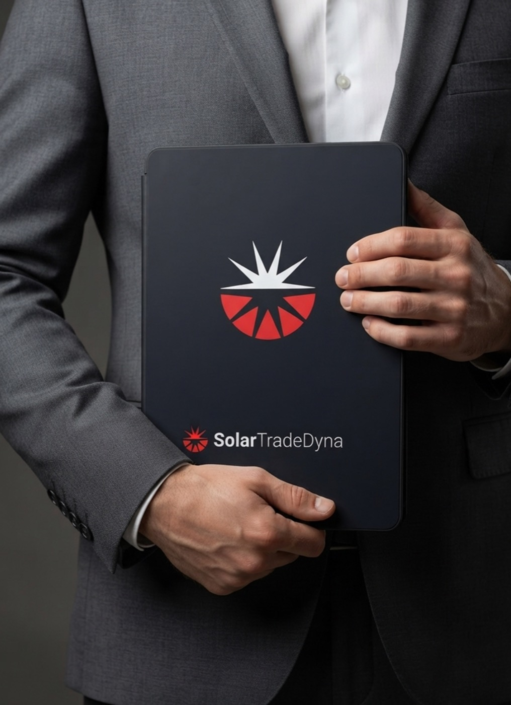

Identidad y aplicaciones
SolarTradeDyna
Construimos un símbolo solar dinámico, un territorio de negro profundo con rojo señal, y un sistema que va del hardware al software — credenciales, dashboard, vallas y campaña. Estrategia preparada por el agente, dirección de arte humana en cada capa.